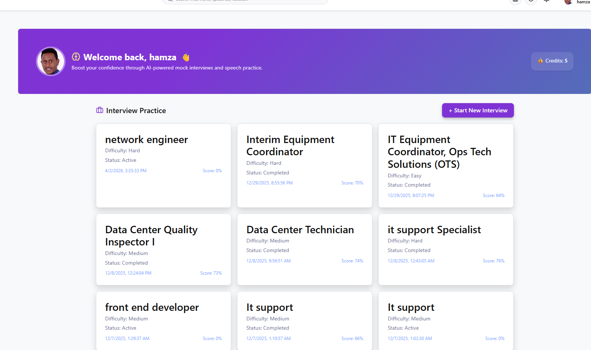
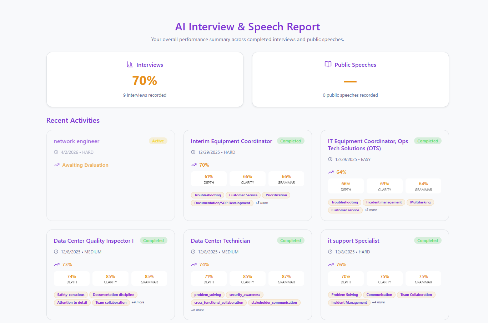
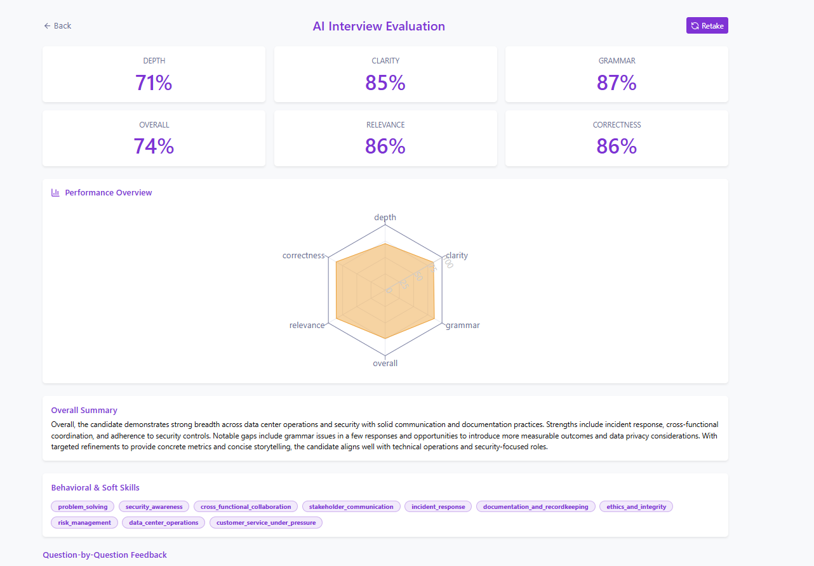
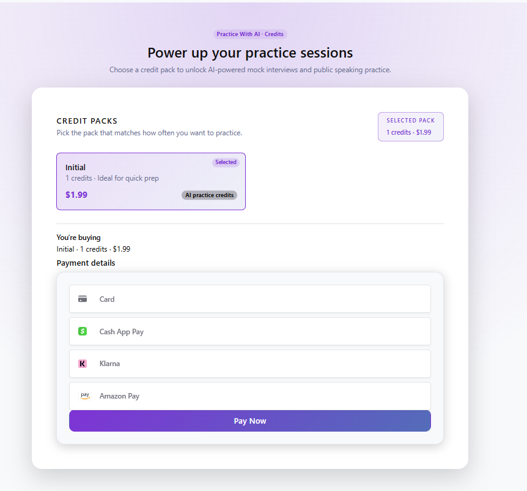
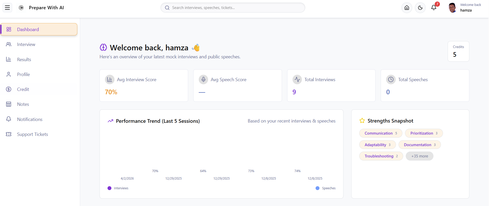

PrepWithAI
PrepWithAI is a full-stack AI-powered mock interview and public speaking preparation platform designed to help users practice, improve, and build confidence before real interviews or presentations. The application generates optimized interview questions, collects user responses, provides detailed AI feedback, tracks session results, and supports a credit-based payment system.
Application Screenshots
A visual look at the core PrepWithAI experience, including the user dashboard, interview practice flow, reports, detailed AI evaluation, and payment system.

User Dashboard
Main dashboard where users can access interview practice, review progress, manage credits, and continue their preparation workflow.





AI-Powered
Generates customized interview questions and provides detailed feedback on user responses.
Full-Stack Build
Built with React, Node.js, Express, MySQL, authentication, APIs, and payment integration.
Stripe Payments
Integrated a credit-based payment system using Stripe checkout and webhook processing.
Production Deployed
Hosted as a live production platform with server configuration, HTTPS, and domain setup.
Problem
Many job seekers struggle to practice interviews effectively because they lack realistic questions, structured feedback, and a clear way to measure communication quality before real interviews.
Solution
I built an AI-powered platform that generates optimized interview questions, collects user responses, stores interview sessions, and returns detailed feedback on clarity, relevance, structure, and improvement opportunities.
Impact
PrepWithAI turns interview preparation into a guided, repeatable process where users can practice independently, review detailed results, and improve their confidence before real career opportunities.
Key Features
AI Mock Interview Practice
Generates optimized interview questions and guides users through structured practice sessions based on career preparation needs.
Detailed AI Feedback
Evaluates user responses based on clarity, relevance, structure, communication quality, strengths, weaknesses, and improvement opportunities.
Interview Reports
Stores interview sessions, asked questions, user responses, and AI evaluations so users can review their performance over time.
Voice and Text Response Support
Supports typed responses and voice-based practice workflows to create a more realistic interview preparation experience.
Public Speaking Evaluation
Allows users to submit speeches and receive AI-powered feedback on structure, clarity, communication effectiveness, and improvement areas.
Secure Authentication
Uses JWT, HTTP-only cookies, and email OTP verification to protect user accounts and application access.
Credit-Based Payment System
Integrates Stripe payments and webhook processing so users can purchase interview practice credits securely.
Production Deployment
Deployed as a live production platform with backend process management, HTTPS security, domain configuration, and database integration.
Technology Stack
Frontend
React.js, Vite, Redux Toolkit, Bootstrap, HTML5, CSS3
Backend
Node.js, Express.js, REST APIs, MySQL2/promise
AI Integration
OpenAI API for question generation, response evaluation, and public speaking feedback.
Authentication
JWT, HTTP-only cookies, OTP verification, protected user sessions, and secure account flow.
Payments
Stripe checkout, payment intents, webhooks, credit transactions, and payment status handling.
Email Service
Mailgun for OTP verification emails and account communication workflows.
Database
MySQL tables for users, sessions, questions, responses, AI feedback, speeches, and credits.
Deployment
Ubuntu VPS, Nginx reverse proxy, PM2, Certbot SSL, domain setup, and production server configuration.
What This Project Demonstrates
This project demonstrates my ability to design, build, deploy, and maintain a real AI-powered full-stack web application. It combines frontend development, backend API design, relational database modeling, AI integration, secure authentication, payment processing, email verification, production deployment, and product-focused problem solving into one complete software solution.